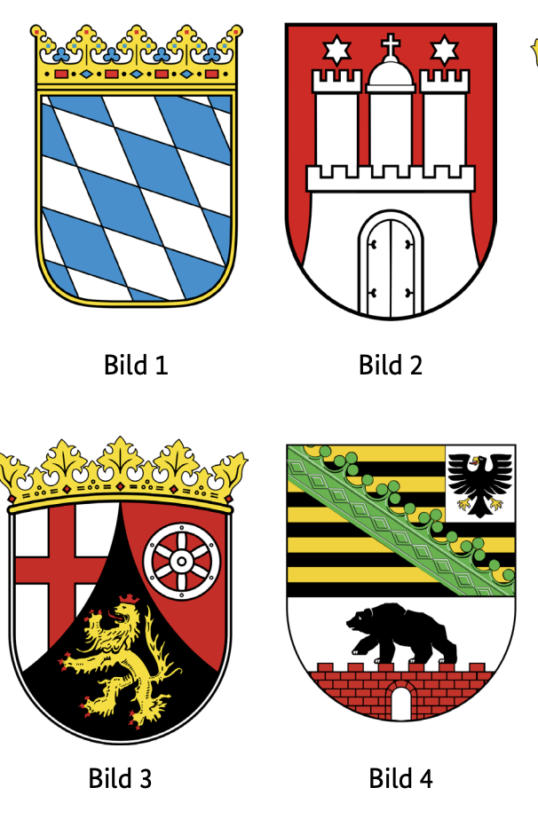
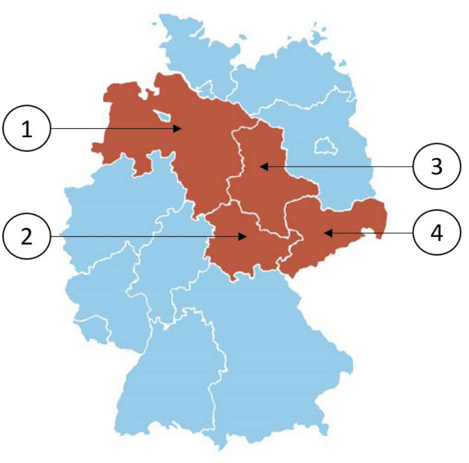

Leben in Deutschland Saksonya-Anhalt (Sachsen-Anhalt) Soruları
Resmi BAMF soru havuzundaki 10 Sachsen-Anhalt (ST) eyalet sorusunun Almanca ve Türkçe açıklamalı interaktif çözümleri. Soru üzerine tıklayarak bilginizi anında test edin.
Almanya vatandaşlık ve kalıcı oturum için yapılan Leben in Deutschland (LiD) sınavında adaya toplam 33 çoktan seçmeli soru sorulur:
30 Genel Soru: Demokrasi, hukuk, tarih ve toplumsal yaşam (300 genel soru havuzundan).
3 Eyalet Sorusu: İkamet ettiğiniz eyalete özel tarih, coğrafya ve anayasa soruları (Aşağıdaki 10 eyalet sorusu havuzundan).
Sınavı geçmek için 33 sorudan en az 15 doğru (Vatandaşlık şartı) veya 17 doğru (Oryantasyon kursu başarı sertifikası) yapmanız gerekmektedir.
📝 10 Resmi Sachsen-Anhalt Sorusunu Çözün
Soru #431 (1 / 10)Federal Eyalet: Sachsen-Anhalt
Welches Wappen gehört zum Bundesland Sachsen-Anhalt?
TR: Hangi arma Saksonya-Anhalt federal eyaletine aittir?

✅ Doğru Cevap: Şık D (Bild 4)
Alman federal eyaletleri hakkında yapılan bir bilgi yarışmasında çeşitli armalar gösterilmiştir. Her arma bir numara (1'den 4'e kadar) ile donatılmıştır. Göreviniz, federal eyaletlerin sembolleri hakkındaki bilginize dayanarak Saksonya-Anhalt eyaletine doğru armayı atamaktır. Saksonya-Anhalt'ın resmi armasına ait numarayı seçin.
In einem Quiz zu den deutschen Bundesländern werden verschiedene Wappen gezeigt. Jedes Wappen ist mit einer Nummer versehen (1 bis 4). Deine Aufgabe ist es, anhand deiner Kenntnisse über die Symbole der Bundesländer das richtige Wappen dem Bundesland Sachsen-Anhalt zuzuordnen. Wähle die Nummer, die zum offiziellen Landeswappen von Sachsen-Anhalt gehört.
In a quiz on the German federal states, various coats of arms are shown. Each coat of arms is provided with a number (1 to 4). Your task is to assign the correct coat of arms to the state of Saxony-Anhalt based on your knowledge of the symbols of the federal states. Choose the number that belongs to the official coat of arms of Saxony-Anhalt.
في اختبار عن الولايات الفيدرالية الألمانية، تعرض شعارات النبالة المختلفة. كل شعار نبالة مزود برقم (من 1 إلى 4). مهمتك هي تعيين الشعار الصحيح لولاية ساكسونيا أنهالت بناء على معرفتك برموز الولايات الفيدرالية. اختر الرقم الذي ينتمي إلى شعار النبالة الرسمي لساكسونيا أنهالت.
У вікторині про федеральні землі Німеччини демонструються різні герби. Кожен герб має номер (від 1 до 4). Ваше завдання — присвоїти правильний герб землі Саксонія-Ангальт на основі ваших знань про символи федеральних земель. Виберіть номер, що належить офіційному гербу Саксонії-Ангальт.
Soru #432 (2 / 10)Federal Eyalet: Sachsen-Anhalt
Welches ist ein Landkreis in Sachsen-Anhalt?
TR: Saksonya-Anhalt'ta hangi bir ilçe?
✅ Doğru Cevap: Şık D (Börde)
Soru, Almanya'nın idari yapısıyla ilgilidir. Almanya, federal eyaletlere ayrılmıştır; bu eyaletler ise kırsal bölgeler ve bağımsız şehirlerden oluşur. Saksonya-Anhalt bu federal eyaletlerden biridir ve kendi bölgelerinden birkaçına sahiptir. Görev, farklı eyaletlere atanan farklı bölgeleri adlandırıyor. Amaç, aslında Saksonya-Anhalt eyaletinde bulunan ilçeyi tanımlamaktır.
Die Frage bezieht sich auf die Verwaltungsstruktur Deutschlands. Deutschland ist in Bundesländer unterteilt, die wiederum aus Landkreisen und kreisfreien Städten bestehen. Sachsen-Anhalt ist eines dieser Bundesländer und besitzt mehrere eigene Landkreise. In der Aufgabe werden verschiedene Landkreise genannt, die unterschiedlichen Bundesländern zugeordnet sein können. Ziel ist es, den Landkreis zu erkennen, der tatsächlich im Bundesland Sachsen-Anhalt liegt.
The question relates to the administrative structure of Germany. Germany is divided into federal states, which in turn consist of rural districts and independent cities. Saxony-Anhalt is one of these federal states and has several districts of its own. The task names different districts, which can be assigned to different federal states. The aim is to identify the district, which is actually located in the state of Saxony-Anhalt.
السؤال يتعلق بالهيكل الإداري لألمانيا. تنقسم ألمانيا إلى ولايات اتحادية، والتي بدورها تتكون من مناطق ريفية ومدن مستقلة. ساكسونيا-أنهالت هي واحدة من هذه الولايات الفيدرالية ولها عدة مناطق انتخابية خاصة بها. تحدد المهمة مناطق مختلفة، يمكن تعيينها لولايات فيدرالية مختلفة. الهدف هو تحديد المنطقة التي تقع فعليا في ولاية ساكسونيا أنهالت.
Питання стосується адміністративної структури Німеччини. Німеччина поділена на федеральні землі, які, у свою чергу, складаються з сільських районів і незалежних міст. Саксонія-Ангальт є однією з таких федеральних земель і має кілька власних округів. Завдання називає різні округи, які можуть бути призначені різним федеральним землям. Мета — визначити район, який фактично розташований у землі Саксонія-Ангальт.
Soru #433 (3 / 10)Federal Eyalet: Sachsen-Anhalt
Für wie viele Jahre wird der Landtag in Sachsen-Anhalt gewählt?
TR: Saksonya-Anhalt'taki eyalet parlamentosu kaç yıl boyunca faaliyet gösterecek
Seçildi?
✅ Doğru Cevap: Şık C (5)
Almanya'daki hayat için önemli bir soru
Wichtige Frage für das Leben in Deutschland
Important question for life in Germany
سؤال مهم للحياة في ألمانيا
Важливе питання для життя в Німеччині
Soru #434 (4 / 10)Federal Eyalet: Sachsen-Anhalt
Ab welchem Alter darf man in Sachsen-Anhalt bei Kommunalwahlen wählen?
TR: Saksonya-Anhalt'ta yerel seçimlerde hangi yaştan oy kullanabilirsiniz?
?
✅ Doğru Cevap: Şık B (16)
Almanya'daki hayat için önemli bir soru
Wichtige Frage für das Leben in Deutschland
Important question for life in Germany
سؤال مهم للحياة في ألمانيا
Важливе питання для життя в Німеччині
Soru #435 (5 / 10)Federal Eyalet: Sachsen-Anhalt
Welche Farben hat die Landesflagge von Sachsen-Anhalt?
TR: Saksonya-Anhalt devlet bayrağı hangi renklere sahiptir?
✅ Doğru Cevap: Şık B (gelb-schwarz)
Almanya'da her eyaletin sabit renkler ve sembollerle kendine ait ulusal bayrağı vardır. Soru, Orta Almanya'da yer alan federal eyalet olan Saksonya-Anhalt'a atıfta bulunuyor. Doğru cevabı bulmak için ülkenin bayrağının resmi renklerini bilmeli ve bunları sunulan renk varyantlarıyla karşılaştırmalısınız.
In Deutschland hat jedes Bundesland eine eigene Landesflagge mit festgelegten Farben und Symbolen. Die Frage bezieht sich auf Sachsen-Anhalt, ein Bundesland in Mitteldeutschland. Um die richtige Antwort zu finden, muss man die offiziellen Farben der Landesflagge kennen und sie mit den angebotenen Farbvarianten vergleichen.
In Germany, each state has its own national flag with fixed colors and symbols. The question refers to Saxony-Anhalt, a federal state in central Germany. To find the right answer, you need to know the official colors of the country's flag and compare them with the color variants offered.
في ألمانيا، لكل ولاية علمها الوطني الخاص بألوان ورموز ثابتة. يشير السؤال إلى ساكسونيا-أنهالت، وهي ولاية اتحادية في وسط ألمانيا. للعثور على الإجابة الصحيحة، تحتاج إلى معرفة الألوان الرسمية لعلم الدولة ومقارنتها مع الأنواع اللونية المقدمة.
У Німеччині кожна земля має власний національний прапор із фіксованими кольорами та символами. Питання стосується Саксонії-Ангальт, федеральної землі в центральній Німеччині. Щоб знайти правильну відповідь, потрібно знати офіційні кольори прапора країни та порівняти їх із запропонованими варіантами кольорів.
Soru #436 (6 / 10)Federal Eyalet: Sachsen-Anhalt
Wo können Sie sich in Sachsen-Anhalt über politische Themen informieren?
TR: Saksonya-Anhalt'taki siyasi konuları nereden öğrenebilirsiniz?
?
✅ Doğru Cevap: Şık B (bei der Landeszentrale für politische Bildung)
Almanya'daki hayat için önemli bir soru
Wichtige Frage für das Leben in Deutschland
Important question for life in Germany
سؤال مهم للحياة في ألمانيا
Важливе питання для життя в Німеччині
Soru #437 (7 / 10)Federal Eyalet: Sachsen-Anhalt
Die Landeshauptstadt von Sachsen-Anhalt heißt …
TR: Saksonya-Anhalt eyalet başkenti ...
✅ Doğru Cevap: Şık C (Magdeburg)
Bu soru, Almanya'nın federal eyaletleriyle ilgili bir coğrafya veya genel bilgi testinden geliyor. Her ülkenin siyasi ve idari başkentleri hakkındaki bilgileri test eder. Saksonya-Anhalt, 16 federal eyaletten biridir ve görev, birkaç tanınmış şehir arasından doğru eyalet başkentini seçmektir.
Diese Frage stammt aus einem Geografie- oder Allgemeinwissensquiz zu den Bundesländern Deutschlands. Sie prüft das Wissen über die politischen und administrativen Hauptstädte der einzelnen Länder. Sachsen-Anhalt ist eines der 16 Bundesländer, und die Aufgabe besteht darin, aus mehreren bekannten Städten die richtige Landeshauptstadt auszuwählen.
This question comes from a geography or general knowledge quiz about the federal states of Germany. It tests knowledge of the political and administrative capitals of each country. Saxony-Anhalt is one of the 16 federal states, and the task is to choose the right state capital from several well-known cities.
هذا السؤال يأتي من اختبار جغرافيا أو معرفة عامة عن الولايات الفيدرالية في ألمانيا. تختبر المعرفة بالعواصم السياسية والإدارية لكل دولة. ساكسونيا-أنهالت هي واحدة من 16 ولاية اتحادية، والمهمة هي اختيار عاصمة الولاية المناسبة من بين عدة مدن معروفة.
Це питання походить із географічного або загального тесту про федеральні землі Німеччини. Вона перевіряє знання політичних та адміністративних столиць кожної країни. Саксонія-Ангальт є однією з 16 федеральних земель, і завдання полягає в виборі правильної столиці землі серед кількох відомих міст.
Soru #438 (8 / 10)Federal Eyalet: Sachsen-Anhalt
Welches Bundesland ist Sachsen-Anhalt?
TR: Saksonya-Anhalt hangi federal eyalettir?

✅ Doğru Cevap: Şık C (3)
Aşağıdaki soru Almanya'nın siyasi ve coğrafi sistemiyle ilgilidir. Almanya, her birinin kendi idareleri ve özel özellikleri olan birkaç federal eyalete ayrılmıştır. Soruyu yanıtlayabilmek için, bir federal eyaletin ne tür bir idari birim olduğunu ve Almanya'daki federal eyaletlerin nasıl organize edildiğini bilmek gerekir. Cevap seçenekleri numaralandırılmıştır ve farklı kategoriler veya ödevler örnekleridir.
Die folgende Frage bezieht sich auf das politische und geografische System Deutschlands. Deutschland ist in mehrere Bundesländer unterteilt, die jeweils eigene Verwaltungen und Besonderheiten haben. Um die Frage beantworten zu können, sollte man wissen, welche Art von Verwaltungseinheit ein Bundesland ist und wie die Bundesländer in Deutschland organisiert sind. Die Antwortmöglichkeiten sind nummeriert und stehen beispielhaft für verschiedene Kategorien oder Zuordnungen.
The following question relates to the political and geographical system of Germany. Germany is divided into several federal states, each with its own administrations and special features. In order to be able to answer the question, one should know what kind of administrative unit a federal state is and how the federal states in Germany are organized. The answer options are numbered and are examples of different categories or assignments.
السؤال التالي يتعلق بالنظام السياسي والجغرافي في ألمانيا. تنقسم ألمانيا إلى عدة ولايات اتحادية، لكل منها إداراتها وخصائصها الخاصة. لكي تتمكن من الإجابة على السؤال، يجب أن تعرف نوع الوحدة الإدارية التي تمثلها الدولة الفيدرالية وكيف يتم تنظيم الولايات الفيدرالية في ألمانيا. خيارات الإجابة مرقمة وهي أمثلة على فئات أو مهام مختلفة.
Наступне питання стосується політичної та географічної системи Німеччини. Німеччина поділена на кілька федеральних земель, кожна з яких має власні адміністрації та особливі особливості. Щоб відповісти на це питання, слід знати, яким типом адміністративної одиниці є федеральна земля і як організовані федеральні землі в Німеччині. Варіанти відповідей пронумеровані і є прикладами різних категорій або завдань.
Soru #439 (9 / 10)Federal Eyalet: Sachsen-Anhalt
Wie nennt man die Regierungschefin / den Regierungschef in Sachsen-Anhalt?
TR: Hükümet başkanına ne diyorsunuz?
Saksonya-Anhalt mı?
✅ Doğru Cevap: Şık D (Ministerpräsidentin / Ministerpräsident)
Almanya'daki hayat için önemli bir soru
Wichtige Frage für das Leben in Deutschland
Important question for life in Germany
سؤال مهم للحياة في ألمانيا
Важливе питання для життя в Німеччині
Soru #440 (10 / 10)Federal Eyalet: Sachsen-Anhalt
Welche Ministerin / welchen Minister hat Sachsen-Anhalt nicht?
TR: Saksonya-Anhalt'ta hangi bakan yok?
✅ Doğru Cevap: Şık B (Außenministerin / Außenminister)
Almanya'da siyaset federal hükümet ile federal eyaletler arasında bölünmüştür. Her federal eyaletin, örneğin Saksonya-Anhalt'ın kendi eyalet hükümeti vardır ve belirli bakanlıklarla birlikte, örneğin maliye, içişleri veya adalet bakanlıkları vardır. Ancak diğer politika alanları tamamen federal hükümetin sorumluluğundadır. Soruyu doğru anlamak için, hangi görevlerin genellikle devlet düzeyinde yapıldığını, hangilerinin yapılmadığını bilmek gerekir.
In Deutschland ist die Politik zwischen dem Bund und den Bundesländern aufgeteilt. Jedes Bundesland, wie Sachsen-Anhalt, hat eine eigene Landesregierung mit bestimmten Ministerien, zum Beispiel für Finanzen, Inneres oder Justiz. Andere Politikbereiche liegen jedoch ausschließlich in der Zuständigkeit des Bundes. Um die Frage richtig zu verstehen, sollte man wissen, welche Aufgaben typischerweise auf Landesebene wahrgenommen werden und welche nicht.
In Germany, politics is divided between the federal government and the federal states. Each federal state, such as Saxony-Anhalt, has its own state government with certain ministries, for example for finance, interior or justice. Other policy areas, however, are exclusively the responsibility of the federal government. In order to understand the question correctly, one should know which tasks are typically performed at the state level and which are not.
في ألمانيا، تنقسم السياسة بين الحكومة الفيدرالية والولايات الفيدرالية. كل ولاية اتحادية، مثل ساكسونيا أنهالت، لديها حكومتها الخاصة مع وزارات معينة، مثل المالية أو الداخلية أو العدل. ومع ذلك، فإن مجالات السياسات الأخرى تقع حصريا على عاتق الحكومة الفيدرالية. لفهم السؤال بشكل صحيح، يجب أن يعرف أي المهام تنفذ عادة على مستوى الدولة وأيها لا تنفذ.
У Німеччині політика поділена між федеральним урядом і федеральними землями. Кожна федеральна земля, така як Саксонія-Ангальт, має власний уряд землі з певними міністерствами, наприклад, фінансів, внутрішніх справ або юстиції. Інші політичні сфери, однак, перебувають виключно під відповідальністю федерального уряду. Щоб правильно зрозуміти питання, потрібно знати, які завдання зазвичай виконуються на рівні штату, а які — ні.
300 Genel Soruyu ve Eyalet Sorularını Eksiksiz Çalışın
DeutschLernen LiD Trainer'da tüm 310 soruyu 5 farklı dilde (Türkçe, İngilizce, Arapça, Ukraynaca, Almanca) çözebilir, deneme sınavı simülasyonu yapabilirsiniz.